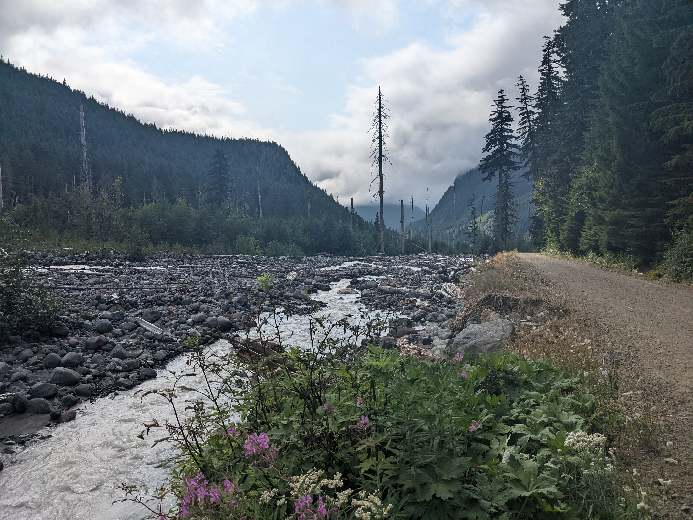
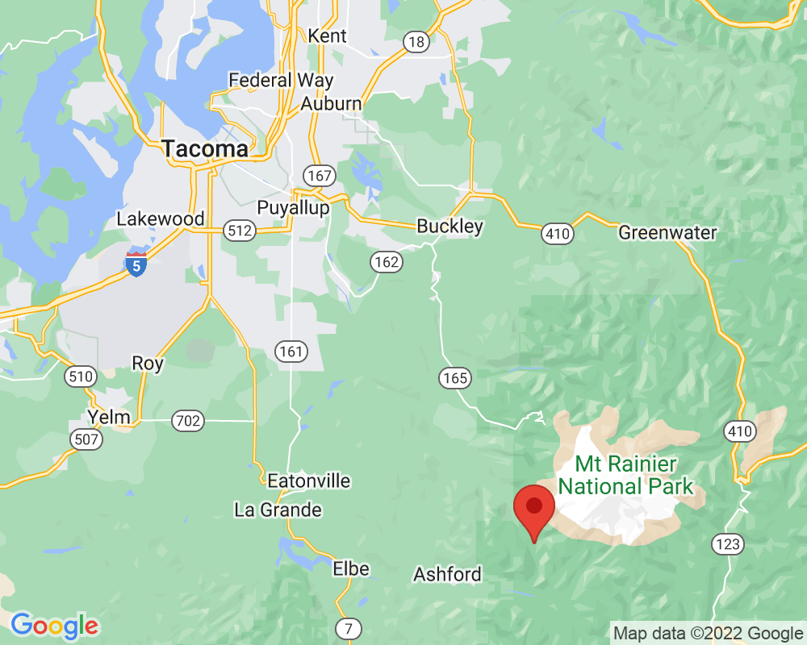

Road erosion
Tahoma Creek has moved very near to Westside Road. The water has eroded part of the road. It is not safe for cars anymore.
Many years ago, cars were allowed to drive on Westside Road. Today, only hikers and bike riders are allowed.
In winter, the road is covered in snow and very popular for skiing and snowshoeing.
Visited: September 3, 2022 at 11:54 AM
Location: Westside Road/Tahoma Creek
